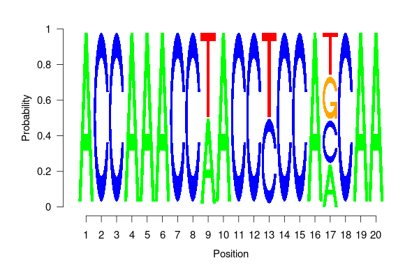

Ancestral Sequence Reconstruction
Klaus Schliep
Graz University of Technologyklaus.schliep@gmail.com
2022-06-07
Source:vignettes/Ancestral.Rmd
Ancestral.RmdIntroduction
These notes describe the ancestral sequence reconstruction using the phangorn package (Schliep 2011). phangorn provides several methods to estimate ancestral character states with either Maximum Parsimony (MP) or Maximum Likelihood (ML). For more background on all the methods see e.g. (Felsenstein 2004) or (Yang 2006).
Parsimony reconstructions
To reconstruct ancestral sequences we first load some data and reconstruct a tree:
## Loading required package: ape
fdir <- system.file("extdata/trees", package = "phangorn")
primates <- read.phyDat(file.path(fdir, "primates.dna"),
format = "interleaved")
tree <- pratchet(primates, trace=0) |> acctran(primates)
parsimony(tree, primates)## [1] 746For parsimony analysis of the edge length represent the observed number of changes. Reconstructing ancestral states therefore defines also the edge lengths of a tree. However there can exist several equally parsimonious reconstructions or states can be ambiguous and therefore edge length can differ. “MPR” reconstructs the ancestral states for each (internal) node as if the tree would be rooted in that node. However the nodes are not independent of each other. If one chooses one state for a specific node, this can restrict the choice of neighboring nodes (figures 2 and 3). The function acctran (accelerated transformation) assigns edge length and internal nodes to the tree (Swofford and Maddison 1987).
anc.acctran <- ancestral.pars(tree, primates, "ACCTRAN")
anc.mpr <- ancestral.pars(tree, primates, "MPR")All the ancestral reconstructions for parsimony are based on the fitch algorithm and so far only bifurcating trees are allowed. However trees can get pruned afterwards using the function multi2di from ape.
The seqLogo function from the seqLogo package from Bioconductor provides a neat way to show proportions of a nucleotides of ancestral states (see figure 1).

You may need to install seqLogo before
if (!requireNamespace("BiocManager", quietly = TRUE))
install.packages("BiocManager")
BiocManager::install("seqLogo")Fig 2. Ancestral reconstruction using MPR.
Fig 3. Ancestral reconstruction using ACCTRAN.
Likelihood reconstructions
phangorn also offers the possibility to estimate ancestral states using a ML. The advantages of ML over parsimony is that the reconstruction accounts for different edge lengths. So far only a marginal construction is implemented (see (Yang 2006)).
fit <- pml(tree, primates)
fit <- optim.pml(fit, model="F81", control = pml.control(trace=0))We can assign the ancestral states according to the highest likelihood (“ml”): \[ P(x_r = A) = \frac{L(x_r=A)}{\sum_{k \in \{A,C,G,T\}}L(x_r=k)} \] and the highest posterior probability (“bayes”) criterion: \[ P(x_r=A) = \frac{\pi_A L(x_r=A)}{\sum_{k \in \{A,C,G,T\}}\pi_k L(x_r=k)}, \] where \(L(x_r)\) is the joint probability of states at the tips and the state at the root \(x_r\) and \(\pi_i\) are the estimated base frequencies of state \(i\). Both methods agree if all states (base frequencies) have equal probabilities.
anc.ml <- ancestral.pml(fit, "ml")
anc.bayes <- ancestral.pml(fit, "bayes")The differences of the two approaches for a specific site (17) are represented in the following figures.
Fig 4. Ancestral reconstruction the using the maximum likelihood.
Fig 5. Ancestral reconstruction using (empirical) Bayes.
Session info
## R version 4.2.0 (2022-04-22)
## Platform: x86_64-pc-linux-gnu (64-bit)
## Running under: Ubuntu 20.04.4 LTS
##
## Matrix products: default
## BLAS: /usr/lib/x86_64-linux-gnu/blas/libblas.so.3.9.0
## LAPACK: /usr/lib/x86_64-linux-gnu/lapack/liblapack.so.3.9.0
##
## locale:
## [1] LC_CTYPE=C.UTF-8 LC_NUMERIC=C LC_TIME=C.UTF-8
## [4] LC_COLLATE=C.UTF-8 LC_MONETARY=C.UTF-8 LC_MESSAGES=C.UTF-8
## [7] LC_PAPER=C.UTF-8 LC_NAME=C LC_ADDRESS=C
## [10] LC_TELEPHONE=C LC_MEASUREMENT=C.UTF-8 LC_IDENTIFICATION=C
##
## attached base packages:
## [1] stats graphics grDevices utils datasets methods base
##
## other attached packages:
## [1] phangorn_2.8.1.1 ape_5.6-2
##
## loaded via a namespace (and not attached):
## [1] Rcpp_1.0.8.3 highr_0.9 bslib_0.3.1 compiler_4.2.0
## [5] jquerylib_0.1.4 prettydoc_0.4.1 tools_4.2.0 digest_0.6.29
## [9] jsonlite_1.8.0 evaluate_0.15 memoise_2.0.1 nlme_3.1-157
## [13] lattice_0.20-45 pkgconfig_2.0.3 rlang_1.0.2 Matrix_1.4-1
## [17] fastmatch_1.1-3 igraph_1.3.1 cli_3.3.0 yaml_2.3.5
## [21] parallel_4.2.0 pkgdown_2.0.3 xfun_0.31 fastmap_1.1.0
## [25] stringr_1.4.0 knitr_1.39 desc_1.4.1 generics_0.1.2
## [29] fs_1.5.2 sass_0.4.1 systemfonts_1.0.4 rprojroot_2.0.3
## [33] grid_4.2.0 R6_2.5.1 textshaping_0.3.6 rmarkdown_2.14
## [37] purrr_0.3.4 magrittr_2.0.3 codetools_0.2-18 htmltools_0.5.2
## [41] quadprog_1.5-8 ragg_1.2.2 stringi_1.7.6 cachem_1.0.6